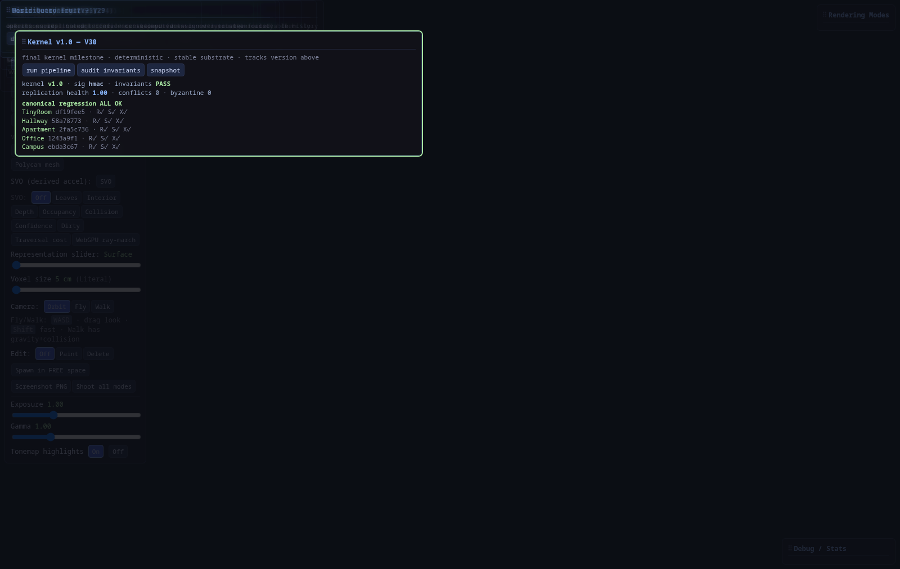
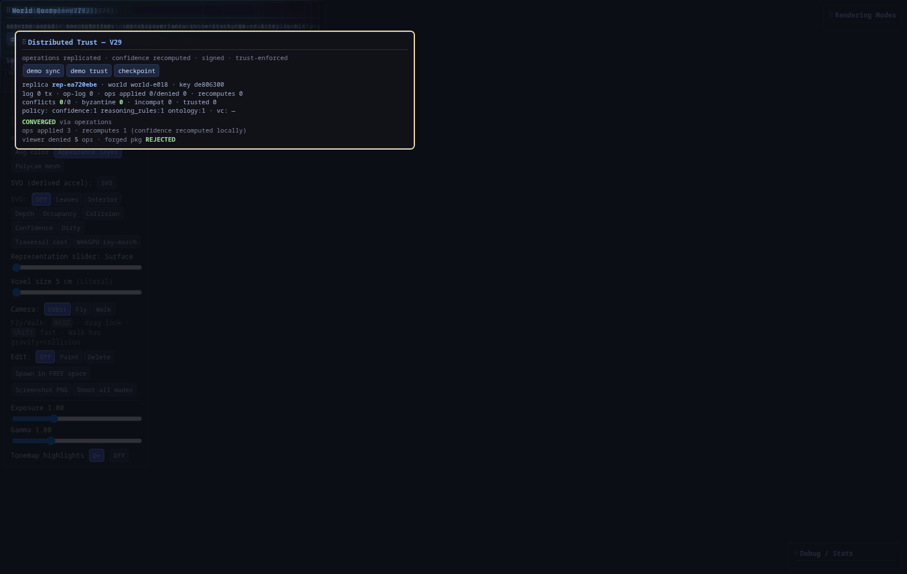
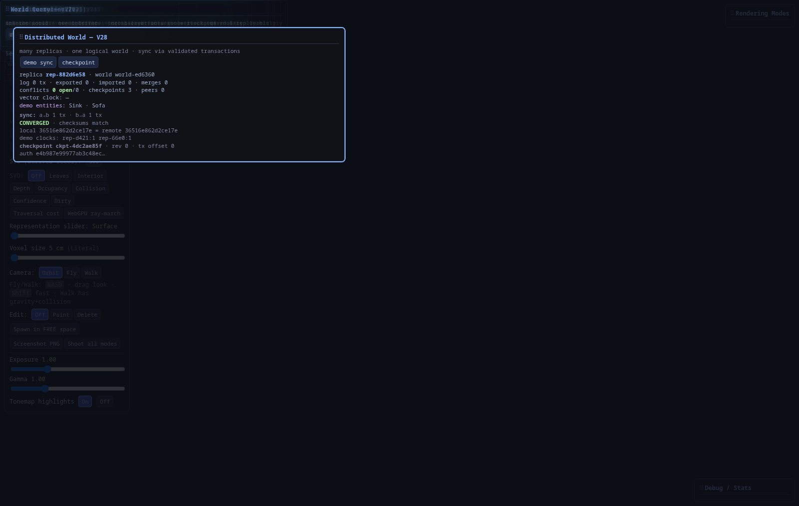

World Model
An open platform for building real-time digital worlds where reality, simulation, AI, robotics, and neural rendering converge — with the voxel world as the single source of geometric truth.
What is Voxel World Model?
Voxel World Model (VWM) is an open architecture for representing the world as a living, synchronized voxel simulation — not a one-shot reconstruction, but a continuously evolving world model.
Rather than treating AI rendering as the simulation itself, VWM separates geometry, meaning, identity through time, inference, and visualization into independent layers that compose automatically through a transactional event-driven kernel.
The Adaptive Voxel World is the authoritative source of geometric truth.
One observation → transaction → semantics → identity → reasoning. Renderers only observe. The whole world can be saved, restored, audited, and replayed.
Core Philosophy
The renderer never owns reality. The renderer visualizes reality.
Why Voxels?
Voxel worlds provide something extremely valuable:
Deterministic
Reproducible, predictable simulation behavior.
Editable
Environments you can change and reason about.
Networked
Efficient sync across devices and identities.
Persistent
Objects keep identity as the world evolves (V24).
Semantic
Meaning with confidence, not bare labels (V23).
Simple Physics
Straightforward rules for real interaction.
Instead of storing only pixels or meshes, VWM stores geometry, meaning, and continuity. A door is a door — with evidence, competing hypotheses, and a life history — not simply millions of triangles.
Digital Twins
One of the primary goals of VWM is creating live digital twins — real-world devices continuously synchronized into the voxel world. With Kernel v1.0 declared, that work proceeds in independently versioned platform tracks (Perception, Simulation, Robotics, FRAME, …) — not further kernel milestones. Apps already talk to the world through world.query; replicas converge through world.sync and world.trust. The intended multimodal surface is catalogued on Multimodal World I/O.
- Smart homes, offices, and factories
- Vehicles, robots, farms, and warehouses
- Laboratories and industrial sites
Real-world events become voxel events. Opening your real office door can open the corresponding voxel door. Smart lights update the virtual room. Vehicle telemetry updates your vehicle inside the world.
Reality is an Input
Everything becomes an event. The simulation does not care where data originated, only that the world changed. V20 unified observation intake; V21 made subsystems react on an event bus instead of orchestration chains.
Semantics, Identity & Reasoning
Unlike traditional voxel engines, objects are not merely blocks. Three shipped layers sit above geometry without mutating it:
Semantic World Engine V23
Entities own competing class hypotheses, attributes, and relationships — they only reference authoritative voxels. One mutation path: evidence → confidence → hypothesis. AI/heuristics propose; humans verify.
Persistent Identity V24
Objects keep UUIDs across observations. Probabilistic multi-signal matching, accumulated confidence, immutable history, change detection, and replay without mutating the present.
World Reasoning V25
Evidence-backed inference: classical rules, causal chains, competing explanations, and hypothetical predictions. Every conclusion cites evidence. Never mutates the world.
Hierarchical Context
Semantic information exists at every level, from the whole world down to individual components — queryable by class, room, and relationship:

AI systems receive rich contextual information — and an auditable evidence trail — instead of only geometry.
Neural Rendering
Photorealism is not the simulation. Photorealism is a renderer. The same voxel world can be viewed through many rendering pipelines; changing renderers never changes simulation.
The View Generator
One authoritative world feeds a view generator; every rendering is just a different way of observing the same state.
Gaussian Observation Pipeline
When the chosen view is Gaussian, the path is fixed and modular: the world never changes; only observation quality does. Deterministic stages produce a Gaussian frame with metadata; optional AI stages enhance it — first locally (what this surface is), then globally (what this scene is). Each stage can be enabled or disabled independently.
Two Enhancement Layers
Instead of one huge neural renderer solving every problem at once, VWM separates responsibilities the way the rest of the stack does — narrowly defined jobs that can improve independently.
Layer 1 — Local Enhancement V18–V22
Improves the rendered Gaussian image itself. Consumes RGB, depth, normals, motion vectors, semantic labels, material IDs, and voxel metadata embeddings.
Jobs: better brick / grass / bark / glass / reflections, cleaner edges, anti-aliasing, fine geometric detail. Classical-CV chain is live (V18); background evolution caches revisions (V19); Real-ESRGAN runs on CUDA as a registry backend (V22) — never the renderer.
Layer 2 — Global Enhancement
Treats the result as a finished frame. Does not care about individual bricks. Still open polish (alongside V13 streaming).
Jobs: HDR tone mapping, cinematic color grading, GI enhancement, atmospheric haze, lens effects, bloom, DOF, motion blur, temporal stabilization, noise reduction, upscaling, and stylization (anime, watercolor, thermal, …).
Sunset example. Layer 1 knows “this voxel is polished brass” and produces realistic brass reflections. Layer 2 knows “the entire scene is golden hour” and warms lighting and atmosphere across the whole frame. Two different problems — complementary stages.
Independent Configuration
Metadata Each Layer Consumes
One model understands what this surface is; the other understands what this scene is. Deterministic world simulation and Gaussian rasterization stay authoritative; local and global AI only observe and enhance. Neural backends are interchangeable through a registry — drop FLUX/HiDream weights later without rewriting the engine.

Voxel Game → Real-Time Photorealism
A real VWM deployment uses an open-source voxel game as the structured simulation layer, then replaces or overlays the native renderer with an AI-driven photorealistic pipeline, keeping geometry exact while upgrading appearance.

AI-Assisted Rendering
Objects may optionally include rendering hints (material, lighting, condition, style). The renderer uses these as conditioning information. Hard facts remain deterministic. Soft hints remain artistic guidance.
Reality Capture & Understanding
The platform ingests information from many sources — RGB and depth cameras, LiDAR, radar, GPS, smart home devices, industrial sensors, and more. V20 unified that intake; semantics, identity, and reasoning all contribute without becoming authority.
VWM reasons about objects, relationships, events, history, and cause — not only pixels. The world becomes understandable, not merely visible.
Replay Everything
Every change can be recorded. V24 reconstructs object state at any past time; V25 replays conclusions and causal chains from the immutable fact log — without modifying the present.
Modular by Design
Every subsystem is replaceable. New renderers, AI models, sensors, and robotics systems integrate without redesigning the platform.
Development Status
The kernel is v1.0 (V30) — a deterministic, transactional, evidence-driven, distributed spatial world kernel. One labeled observation drives the stack; world.query asks the world; world.sync + world.trust converge replicas by exchanging operations and recomputing derived state locally. Appearance v2.2 remains the production appearance default. v2.4 not trained. Overall vision ~99% — see architecture status.
Recent milestones
- V30 — Kernel v1.0 (regression harness · Ed25519 · governance · last kernel milestone)
- V29 — Trust & ops · V28 — Sync · V27 — Query · V26 — Kernel wiring
- V25–V20 — Reasoning · identity · semantics · neural · reactive · capture



Full milestone reports and benchmark tables:
Technical paper → Project updates → Benchmarks → End-to-end pipeline → Multimodal World I/O → Architecture status → Roadmap →Long-Term Vision
Voxel World Model aims to become a universal foundation for persistent digital worlds, a place where:
- Reality continuously synchronizes into simulation
- AI understands the world instead of only generating images
- Robotics interacts through the same world model
- Digital twins remain deterministic
- Rendering becomes interchangeable
- Future neural rendering advances automatically improve every connected world
The simulation remains stable. The visualization evolves forever.
Shipped through Kernel v1.0 (V30): a transactional, evidence-driven, distributed spatial world kernel — robots, AI, twins, FRAME, and the browser go through world.query; replicas exchange operations under world.trust and recompute derived knowledge locally. Next work is above the kernel in independently versioned tracks (Perception · Simulation · Neural · Developer · Robotics · FRAME · Visualization) — plus polish V13 streaming / global frame post and V15 Part 2 browser migration.
Organization
This GitHub organization hosts the components that make Voxel World Model possible:
Every repository contributes toward a common goal: building an open, persistent, AI-native world model for reality itself.